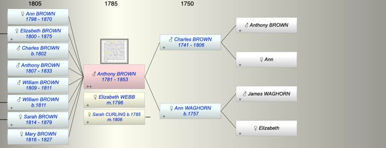

| [Index] |
| Anthony BROWN (1781 - 1853) |
|  |

|
| b. 28 Jan 1781 at City of London |
| m. (1) 25 Jul 1796 Elizabeth WEBB at Hackney |
| m. (2) 28 Jan 1806 Sarah CURLING (1785 - ) at St Botolph, London |
| d. 15 May 1853 at Battersea, London aged 72 |
| Parents: |
| Charles Plaxton BROWN (1741 - 1806) |
| Ann WAGHORN (1757 - ) |
| Siblings (2): |
| Anthony BROWN (1779 - 1780) |
| Ann BROWN (1789 - ) |
| Events in Anthony BROWN (1781 - 1853)'s life | |||||
| Date | Age | Event | Place | Notes | Src |
| 28 Jan 1781 | Anthony BROWN was born | City of London | Note 1 | ||
| 25 Jul 1796 | 15 | Married Elizabeth WEBB | Hackney | Note 2 | |
| 26 May 1798 | 17 | Birth of daughter Ann Good BROWN | Bethnal Green | Note 3 | |
| 06 Aug 1800 | 19 | Birth of daughter Elizabeth BROWN | London | Note 4 | |
| 27 Apr 1802 | 21 | Birth of son Charles Anthony BROWN | City of London | Note 5 | |
| 1806 | 25 | Death of father Charles Plaxton BROWN (aged 65) | |||
| 28 Jan 1806 | 25 | Married Sarah CURLING (aged 20) | St Botolph, London | Note 6 | |
| 04 Jan 1807 | 25 | Birth of son Anthony BROWN | City of London | Note 7 | |
| 02 Feb 1809 | 28 | Birth of son WIlliam BROWN | City of London | Note 8 | |
| bef 1811 | 30 | Death of son WIlliam BROWN (aged 2) | |||
| 02 Oct 1811 | 30 | Birth of son WIlliam BROWN | City of London | Note 9 | |
| 26 May 1814 | 33 | Birth of daughter Sarah BROWN | City of London | Note 10 | |
| 11 Mar 1816 | 35 | Birth of daughter Mary BROWN | City of London | Note 11 | |
| 1827 | 46 | Death of daughter Mary BROWN (aged 11) | City of London | Note 12 | |
| 1833 | 52 | Death of son Anthony BROWN (aged 26) | City of London | Note 13 | |
| 15 May 1853 | 72 | Anthony BROWN died | Battersea, London | Note 14 | |
| Personal Notes: |
|
Granted Freedom of City 1802 by patrimony son of Charles Plaxton Brown ex Ancestry. This confirms his dob as 1781
Will Prob 11/2173. Refers to: Wife Sarah Son William Brown Brother-in-law Joseph Curling (deceased) Daughter Sarah the wife of George Frederick White Uncle William Brown Daughter Ann Good Brown Daughter Elizabeth Brown Son Anthony Brown (deceased) Daughter-in-law Mary Freshfield Brown (nee King), wife of son William Son-in-law George Frederick White One of the executors is Herbert Dalton? the husband of Sarah Curling, daughter of William & Lucretia? 1826 Mayor London ex WIkipedia Anthony Brown, fishmonger 1821 - 1844 Alderman 1844 - 1853 Chamberlaon of London 1851 census living 18 Clapham Rd? Lambeth: Anthony Brown 70 Attorney and solicitor born St Botolph, Sarah 65 wife b Magnus Martyr? Fish St, Ann Good daughter 52 and Elizabeth 50 both single. They must be daughters of his first marriage, How did he marry aged 15? Established the Law Firm Clifford Chance see here https://books.google.co.uk/books?id=zunKieS8gDwC&pg=PA14&lpg=PA14&dq=%22anthony+Brown%22+mayor+of+london&source=bl&ots=Pm4DCx9U5A&sig=ACfU3U2H9WTbqO1UvmuNjOF5hDxqQvjYaQ&hl=en&sa=X&ved=2ahUKEwiLpLPNntnmAhX9RxUIHXw3BwsQ6AEwDXoECAkQAQ#v=onepage&q=%22anthony%20Brown%22%20mayor%20of%20london&f=false Clifford Chance: Its Origins and Development - Page 14 https://books.google.co.uk › books Judy Slinn - 1993 - Preview In 1812 Anthony Brown moved his office again, this time to the London Commercial Sale Rooms, a new building opened the previous year at 30 Mincing Lane. ... That accolade fell to Brown in 1826 when he took office to serve as Lord Mayor. |
| Created on a Mac™ using iFamily for Mac™ on 8 Oct 2023 |